Scan QR code for slides:
What is Git?
A VCS Created by Linus Torvalds in 2005 to do version control on Linux Kernel
Trivia
type `man git` in your terminal
Git => Unpleasant or comtempitible person
Junio Hamano took over project 2 months after release
Originated from a closed software called BitKeeper
What is VCS (Version Control System)
A system that keeps records of changes
Find out who made what changes & when
Allows one to also revert to any previous state
Git is a form of distributed VCS
Subversion/CVS are forms of centralized VCS
Git Snapshots
Each checkin version of the overall code has a copy of each file in it.

Local Git Areas
working copy vs staging vs commited
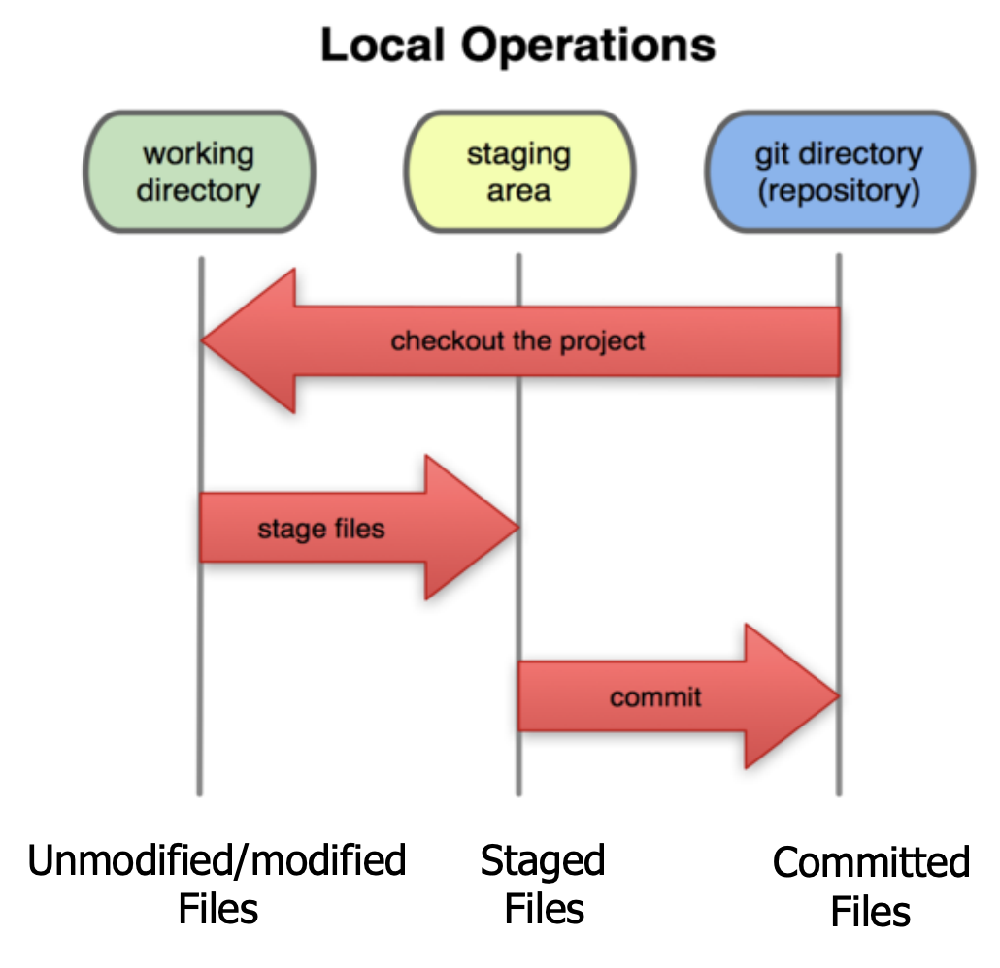A Basic Git Workflow
Modify
Stage
Commit
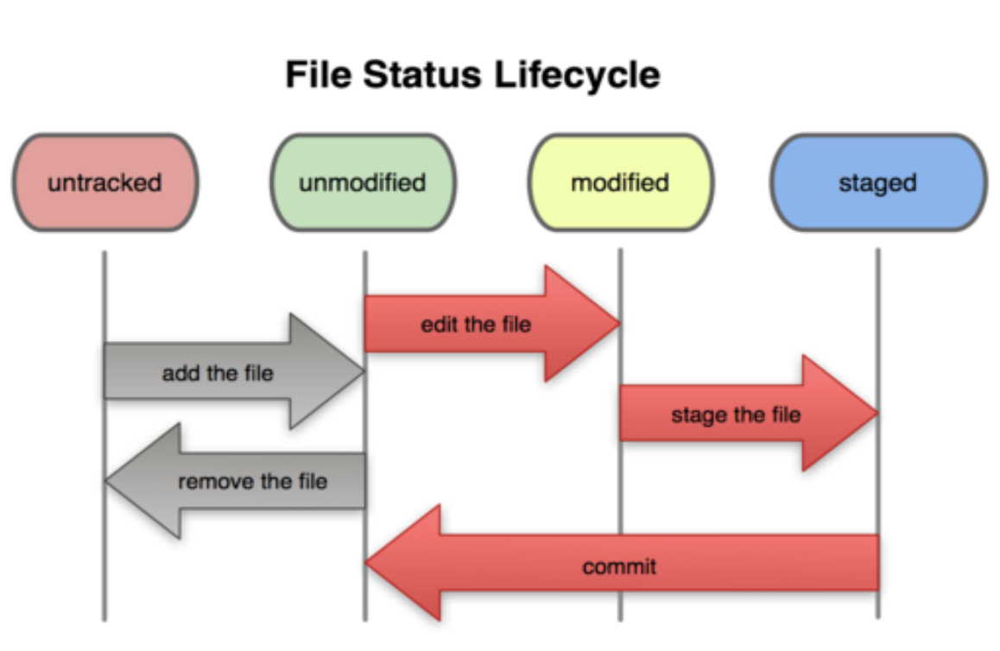Git commit checksums
In Git, each user has their own copy of the repo, and commits changes to their local copy of the repo before pushing to the central server.
So Git generates a unique SHA-1 hash (40 character string of hex digits) for every commit.
Refers to commits by this ID rather than a version number.
Sourcetree
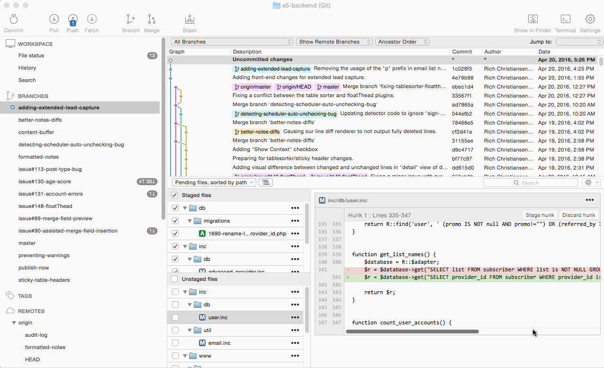GitKraken

gitk
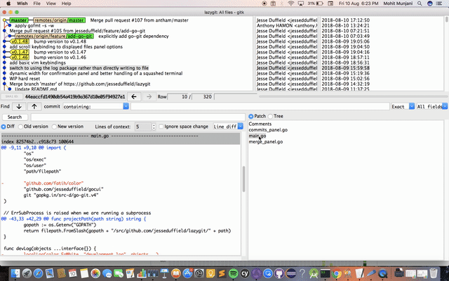Git Clone
Copy a Git repository to your machine
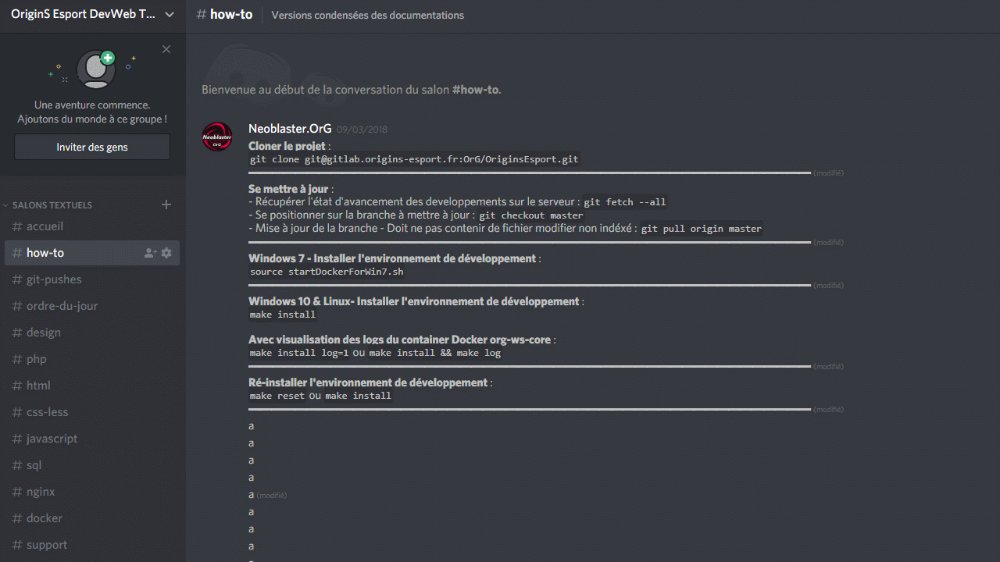Git Status
To view status of files in working directory and staging area:
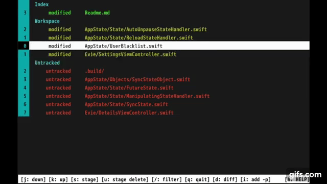 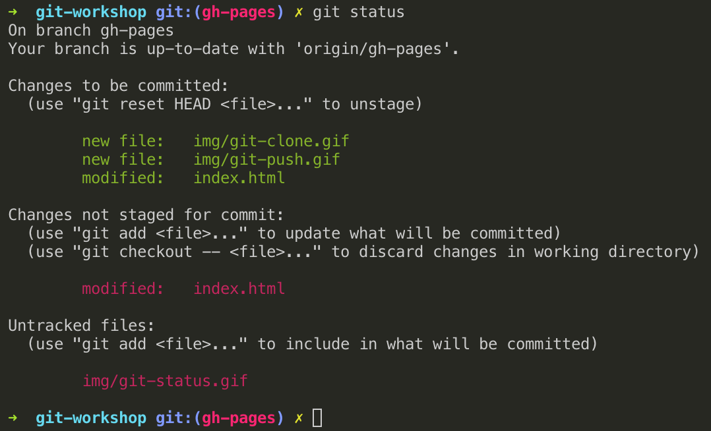Git Diff
To see what is modified but unstaged:
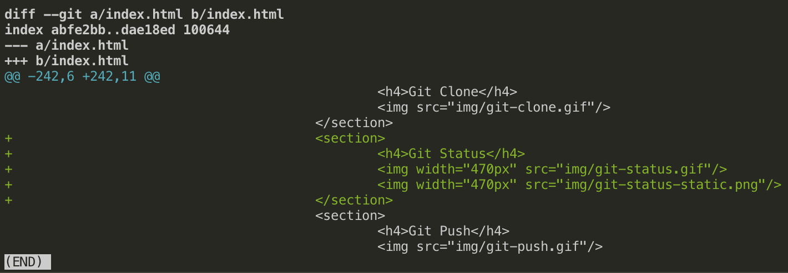Git Push
Push your local changes to the remote repo
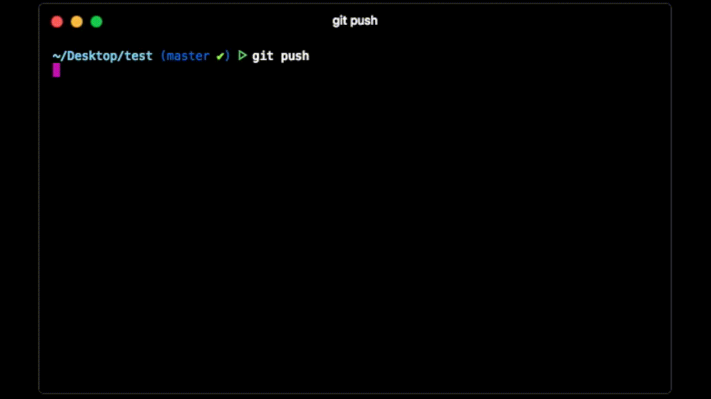Git Pull
Pull from remote repo to get most recent changes
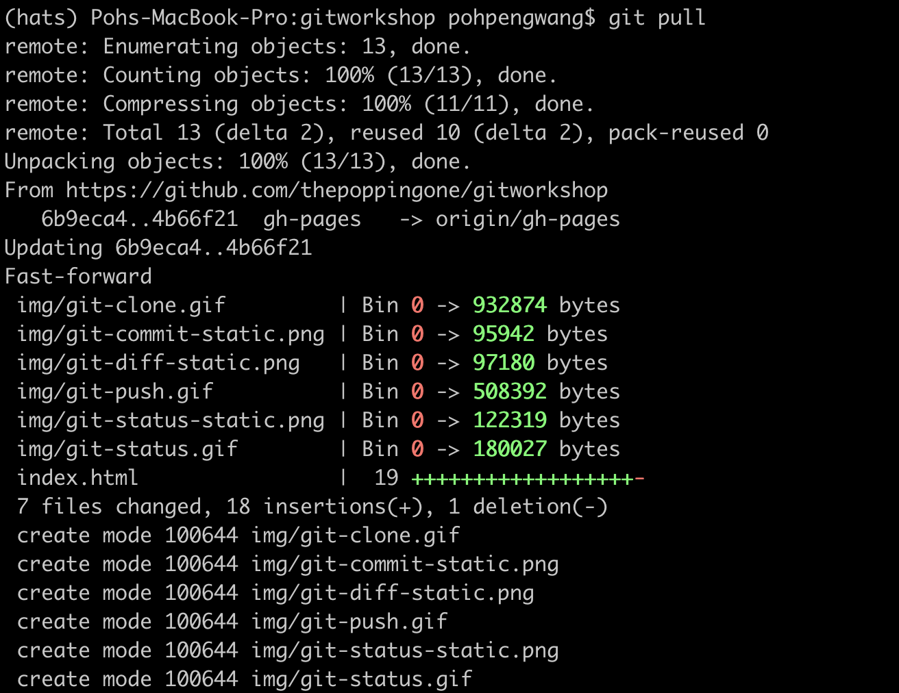Git Log
Show logs of past commits
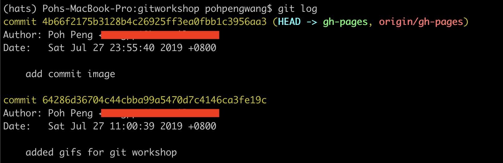Demo Git Basic Commands
How to make code changes locally and pushing it to the remoteMoving beyond Basic Git......
Branching and Merging
Git Branches
Each commit will then extend out from that particular branch
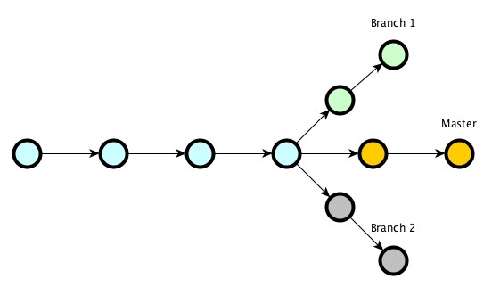Git Merge
On a successful merge, a new merge commit will be created

Pull Requests
However, rarely git merge is used on the remote - instead PRs are used

Demo More Git Commands
We will now merge the local gh-pages branch into master branch